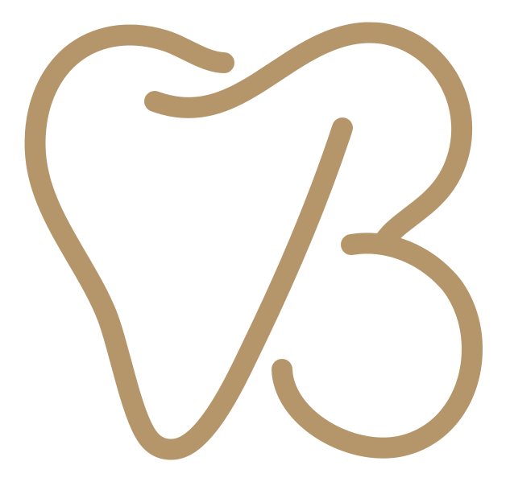
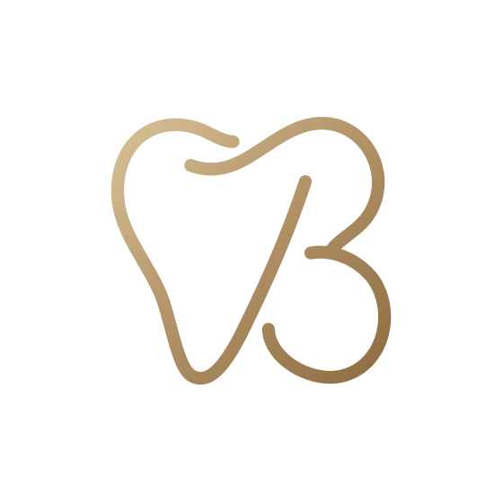

Betina Bernardi Boff
Odontologia
Sobre
Serviços
Avaliações
Blog
Agendar consulta
Sobre
Serviços
Avaliações
Blog
Agendar pelo WhatsApp
←
Voltar ao Blog
Categoria
— min de leitura
Carregando…
Dra. Betina Bernardi Boff
CRO-SC 25849

Betina Bernardi Boff
Ficou com alguma dúvida? Pode me perguntar.
Falar no WhatsApp
Continue lendo
Ver todos os artigos →
Agendar pelo WhatsApp